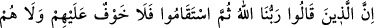
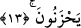

peygamberlere ve semavî kitaplara inanan, doğru yola iletilmiş ve doğru din üzere sabit
olanlara müjdecidir. Uyarı cehennemle ve ebedî ayrılıkladır. Müjde ise cennetle ve
ebedî vuslat iledir. İşte Allah bunun için “güzel davrananları” buyurmuştur. Zira ihsan
müşahede yoluyla Allah’a ibâdet etmektir. Bu müşâhede hâsıl olunca vuslat da hâsıl
olur. Aksi de böyledir. Yâni vuslat olunca da müşâhede olur. Allah’ın fazl u kereminden
bunu istiyoruz.
Sâlihlerden birisinin kardeşi vefat etmişti. Onu rüyasında gördü ve “Hak Teâlâ sana
ne muâmele buyurdu?” diye sordu. Kardeşi; “beni cennete götürdüler, yiyorum,
içiyorum ve evleniyorum.” diye cevap verdi. Bunun üzerine; “onu sormuyorum,
yaratıcının cemâlini gördün mü, görmedin mi?” dedi. Kardeşi; “orada (dünyada) onu
tanımayan kimse burada onu göremez” diye cevap verdi. O azîz kimse uykudan uyandığı
vakit merkebine bindi ve İşbiliyye’de Şeyh-i Ekber (k.s.)’in yanına geldi. Rüyasını ona
anlattı, onun hizmetinin gereklerini yerine getirdi. Bu hizmeti ehl-i nazarın yolu olan
delil tarîkiyle değil, mümkün olduğu nisbette keşf ve şühûd yoluyla yerine getirdi. Allah
Teâlâ’yı tanıdı ve daha sonra kendi makàmına geri döndü.
Seyyid Şerîf Cürcânî (k.s.) demiştir ki; “Eğer Şirâz meşâyıhından olan Şeyh
Zeynüddîn Külâle’ye erişmeseydim, Râfızîlikten kurtulamazdım. Eğer Hâce Alâaddîn
Attâr’ın sohbetinde bulunmasaydım Allah’ı tanıyamazdım.
Akıllı insan hak yolda gayretli olup müşâhede mutluluğuna hazır olmalıdır, müjde
ehlinden olmalıdır. İşte ihlaslı ve samîmî âlimler ve sâlih kullar hep bu mecrâda akıp
gitmişlerdir.
13. «Rabbimiz Allah’tır» deyip sonra da dosdoğru yaşayanlara korku yoktur ve
onlar üzülmeyeceklerdir.
“Rabbimiz Allah’tır” deyip sonra doğru olanlar”, yâni ilmin hulâsası olan tevhid ile
amelin nihâî noktası ve zirvesi olan din işlerinde müstakim olmayı cem edenlere korku
yoktur. Burada “sümme” kelimesi amelin rütbe olarak sonra olduğunu, amel ile hidâyet
bulmanın tevhide bağlı olduğunu ifâde içindir.
İbn Tâhir şöyle demiştir: Bunlar geçmişteki tevhid ikrarlarında istikamet üzere olup
Allah’tan başkasını mün’im olarak görmediler. Hiçbir surette başkasına teşekkür
etmediler. Yine Allah’tan başkasına dönmediler. İstikamet yolu üzere Allah ile sâbit
oldular.
“Onlara”, hoşlanmadıkları bir şeyin kendilerine ulaşmasından “korku yoktur ve
onlar” sevdikleri bir şeyi kaçırmaktan “üzülmeyeceklerdir.” Bu ifâdeden murad artık
hiç üzülmemeleridir.